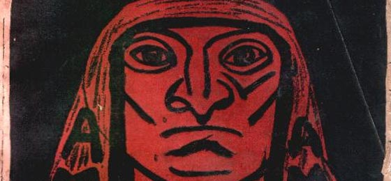
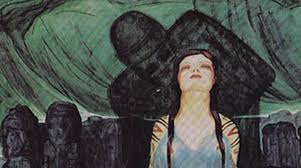
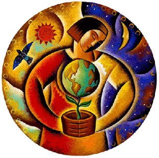

Historia
En los andes esta viracocha pachayachachi, dominan el norte, el chichasuyu, tukapoviyacocha que domina el occidente y el contisuyu, imaimanaviracocha que domina el oriente y el antisuyu, itunupa otahuapaca que domina el sur ocollasuyu. Miracocha es quien crea la primera humanidad y la destruye mediante un diluvio, después de días, el sol hace que y la lluvia hagan que surgan el lago Titicaca. Miracocha es posiblemente el personaje central de la puerta del sol y representa al antiguo dios creador. 20 mil años a.c. se empieza a ver restos de piedra trabajadas por los hombres americanos, es la cultura viscachani la que tiene el trabajo de la piedra mas sotisficado. Paralelamente a la presencia humana, 5000 a.c. se produce una gran sequia que termina con el lago gigante y separa los salares de coipasa Uyuni y los lagos popo. Tambien están las culturas moyo los chipayas y los urus cerca de lago poopo. Simultaneamente aparece una de las 2 principales culturas prehispánicas en la región andina, Tihuanaco que va a tener presencia en el lago Titicaca, lo cual es un importante en los mapas geográficos en el sur del peru. Es uia cultura altamente sotisficada con ejemplos extraordinarios en los tejidos, la cerámica, la orfebrería, la escultura y particularmente la arquitectura. Entre 1100 y 1450 aparecen los señorios aymaras, muestran su presencia en el escenario andino y en lo que fue el área de influencia en el mundo aymara, con su propia lengua y sus propias características. En 1532 en el norte del imperio incaico, Francisco Pizarro, que esta al mando de 168 hombres, entonces los indígenas con 6000 hombres suena el disparo del arca bus y el reducido ejercito español arremte contra el emperador y los 6000 indigenas, el ejercito español con armadura y caballería, los indígenas son masacrados, cortando brazos y cabezas, al terminar el sol los españoles conquistan a los indígenas. En 1533 atahualpa es sometido al garrote y muerto por los españoles. En 1535 llega Diego De Alamagro que va camino al sur por riqueza que nuenca encontró, pero la colona española crea el bireinato en el peru en 1559 el rey Felipe II crea la real audiencia de charcas que abarca la totalidad del territorio de Bolivia, por el descubrimiento de Potosi. En 1686 se funda Trinidad, por la misma época los franciscamos trabajan en el sur, en Tarija y tratan de llevar a los indios a la civilización. La Pachamama ha sido identificada como la virgen maría, tomando la forma como la virgen del cielo, el sol se ha identificado como Dios, la nueva sociedad ha mezclado el poderoso pasado prehispanico y el periodo colonial, fecundando una nueva visión del mundo. Llega un nuevo momento de explotación sistematica que llego a ser insoportable, mientras la España imperial entra en una decadencia imperial, llaman a Tupac Amaru y Tupac Katari. Quieres tomar el cusco y matan al rebelde, pero luego los apresan y lo matan. Tupac Katari cierra los caminos de acceso al valle paceño, los indígenas toman posición y construyen algo para inundar la ciudad, entonces llega el general Recegin que derrota a Tupac Katari en la cual muere también Bartolina Sisa, Tupac Katari es traicionado y es asesinado por 4 caballos, siendo descuartizado. En 1825 aparecen Simon Bolivar y Antonio Jose de Sucre, el gobierno de santa cruz construye la nación. El pueblo ciriguano, se cansa y enfrente a los colonizadores donde matan a varios pero al final son masacrados. En 1945 se convoca al primer congreso indigenal del país, ahí eliminan el pondeaje, en el cual Francisco Chipano Ramos, conocido como Corazon de Piedra, entonces muchos han considerado que se tomaran en cuenta a los indígenas. La revoluciona establece una política de integración de la zona andina, donde comienza un proceso de colonización en los años 90 de indígenas que comienzan a trabajar las tierras. La línea del pensamiento indígena que tiene su precursor que da al catarismo, “vamos a mirar el mundo desde nuestra perspectiva”. La recolizacion por la caída de los minerals, da lugar al nacimiento del chapare, la llamada marcha por el territorio y dignidad. El primer vicepresidente aparece Victor Hugo Cardenas se vuelve nuestro primer vicepresidente indígena en la historia. Surge de origen cocalero el primero presidente indígena en Bolivia, Evo Morales, tratan de recuperar tradiciones indígenas, la larga saga marca uno de los caminos mas dolorosos de la historia de Bolivia.
Filosofía
Bolivia es un abstracto, en la región andina existe una filosofía explicita sistematizada por expertos externos. La vida en armonía con la naturaleza. Hay algunos valores como la critica al egoistmo extremo, el rescate de formas premodermas de conductas entre seres humanos, hay bastantes valores que permiten hablar de una sitacion andina, estos son definidos por expertos, no es tan original . Hay que vivir en armonía con los ecosistemas, idea común en todas las culturas premodernas. Es bueno que se piense en este tipo de temas, una critica es que siempre hemos decepcionado las modas filosóficas de otros países, algo como construir nuestro propio pensamiento, no es que estemos marginados, pero es lo que hay. Entonces se considera que el pesamiento del occidente tiene muchas cosas positvas que podemos rescatar, los filósofos dicen cosas interestantes, estudiar el pesamiento del occidente se puede lograr, con nucleos racionales se hace un pensamiento propio. El pesamiento filosófico, recupera elementos de otras filosofias, que los enlaza con otros, para elaborar el pesamiento, aunque algunos consideran que si. Concluyendo, no existe filosofía en Bolivia, y es demostrado según Guillermo Francovich.
Politica
Cuando la inminente guerra civil entre los conservadores y los liberales terminó en 1899 con la victoria de estos últimos; comenzó una era liberal que duró hasta 1920. Se desarrolló un sistema de educación pública, acompañado de un anticlericalismo moderado: el catolicismo perdió su condición de única religión reconocida por el Estado en 1906 y el matrimonio civil fue adoptado en 1911. El liberalismo boliviano, sin embargo, perdió claramente su carácter progresista para coexistir con los intereses de las nuevas fortunas del estaño (la era liberal también se considera como la era del estaño, con un aumento considerable de la producción de estaño), los terratenientes y el ejército. Inspirado en el ejemplo de la revolución liberal liderada por Eloy Alfaro en Ecuador, un nuevo liberalismo se organizará en un partido republicano y expresará algunas preocupaciones sociales contra la dominación de la oligarquía liberal. Bolivia se compone principalmente del Presidente del Estado (Órgano Ejecutivo) que actúa en coordinación con los Ministerios de Estado, la Asamblea Legislativa Plurinacional (Órgano Legislativo) y las diferentes cortes que ejercen el (Órgano Judicial). Sistema electoral: Sufragio universal y obligatorio, mayoría de edad a los 18 años. Órgano Legislativo Asamblea Legislativa Plurinacional, sede del legislativo. Asamblea Legislativa Plurinacional bicameral, presidido por el Vicepresidente del Estado. Cámara de senadores 36 miembros elegidos por sufragio universal directo para un mandato de 5 años. Se eligen cuatro Senadores por Departamento. Cámara de Diputados 130 escaños elegidos por sufragio universal directo para un mandato de cuatro años; 62 elegidos en las 9 circunscripciones departamentales por sistema proporcional (D'hondt) y 68 en circunscripciones uninominales (más pequeñas que los departamentos) por mayoría simple. Los legisladores de ambas Cámaras (senadores y diputados electos) representantes de un mismo departamento o región, integran de manera conjunta las Brigadas Parlamentarias Departamentales, organizadas para coordinar acciones de interés regional.
Anarcoindigenismo
Básicamente, buscaba dejar al descubierto las luchas aymaras y quechuas. Descubrimos que había muchos vínculos con las comunidades aymaras urbanas que tenían a su vez organizaciones vinculadas tanto a las comunidades indígenas como al movimiento sindical, que en los años 20 era básicamente anarquista. Lo que ocurrió en Bolivia es que han existido dos historias oficiales: la historia oficial escrita por el revolucionario Partido Nacionalista MNR que, básicamente, niega toda la acción de los trabajadores y los campesinos y los pueblos indígenas; y la historia oficial de la izquierda, que se olvida de todo lo que no era marxista, eclipsando o distorsionando la historia autónoma de los sindicatos anarquistas. En este sentido, los vínculos entre los anarquistas y los indígenas le otorgó otro matiz a la historia, debido a que sus comunidades son entidades auto-sostenidas y que básicamente son lugares donde el tipo antiautoritario de organización puede echar raíces. Ellos no necesitan este liderazgo, que es como el liderazgo permanente. Las comunidades tienen líderes, pero resulta ser más una cosa de rotación que un servicio a la comunidad. Es una especie de carga ser un líder de una comunidad, ¿sabes? Es algo que se hace una vez en la vida y lo haces porque se debe hacer, y es la comunidad la cual decide cuál es el turno, tanto de tu familia o el cambio a otra familia. Por lo tanto, esto crea una relación totalmente diferente con las estructuras de poder y, en cierto modo, descoloniza el poder, devolviéndoselo en cierta medida a la gente. Eso es lo que nos fascinó de la mayoría de las comunidades y, por otro lado, nos llevó a descubrir que las comunidades no eran sólo rurales, sino también urbanas, y trabajaron con Luis Cusicanqui y otros dirigentes anarquistas porque tenían una afinidad tan grande en las formas con las que veían la lucha, la autonomía, la dominación y la opresión.